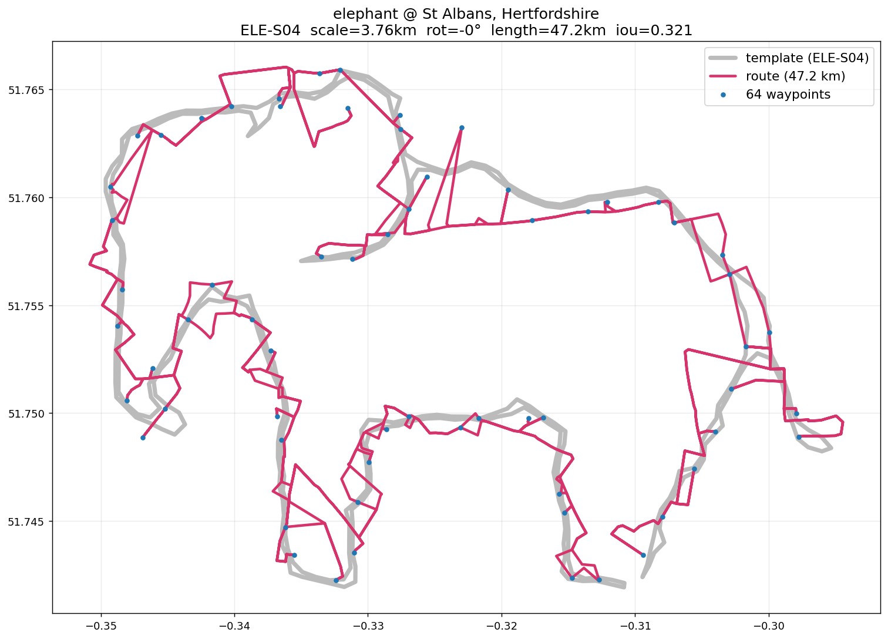
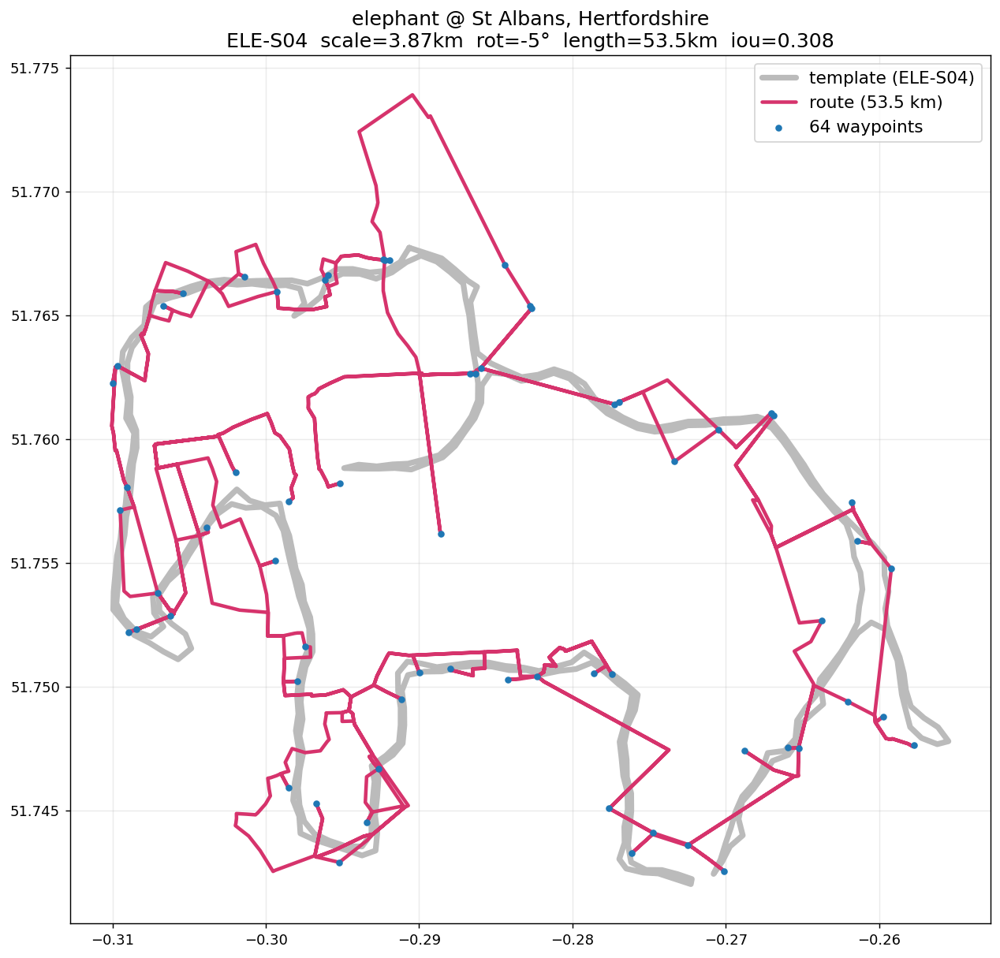
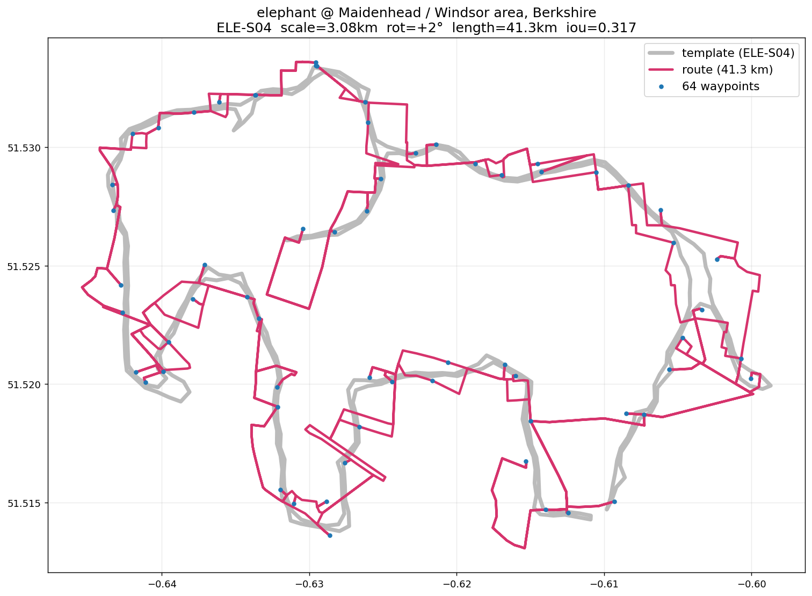
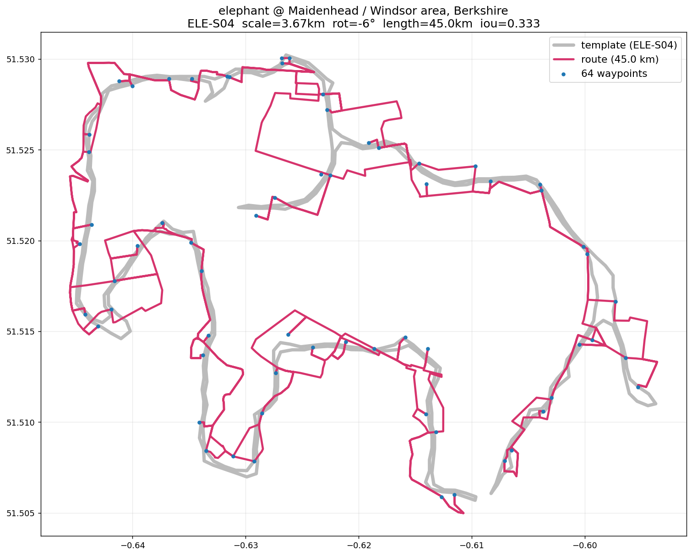
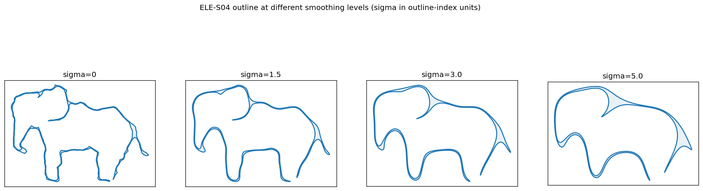

Elephant — before vs after template smoothing (sigma=3)
What changed: applied a Gaussian smoothing pass to the ELE-S04 template polyline
(sigma=3 in outline-index units) to remove the small back-ear bump that was rendering as a
spurious upward spike around waypoint 43. The trunk, body, and 4 legs are preserved.
St Albans
BEFORE — s04_xs
scale=3.76km · rot=-0° · 47.2 km · iou=0.321 · frechet=0.107

Note the small spike on the top-back near waypoint 43 — that's the ear-bump.
AFTER — s04_smooth3
scale=3.87km · rot=-5° · 46.4 km · iou=0.308 · frechet=0.143

Back is smooth; the ear-bump is folded into the head/back curve.
Maidenhead / Windsor area
BEFORE — s04_xs
scale=3.08km · rot=+2° · 41.3 km · iou=0.317 · frechet=0.129

AFTER — s04_smooth3
scale=3.67km · rot=-6° · 40.4 km · iou=0.333 · frechet=0.084

Template outline at different smoothing levels
Shows what the smoothing actually does to the template before routing.

Full dashboard: dashboard.html